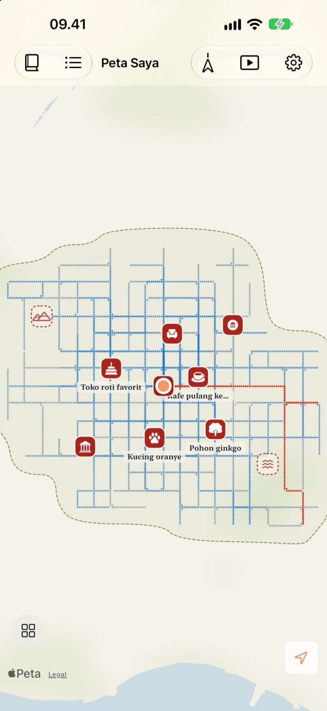
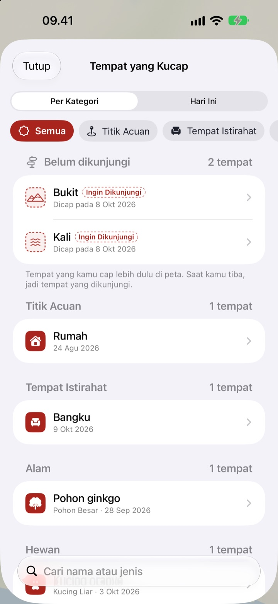
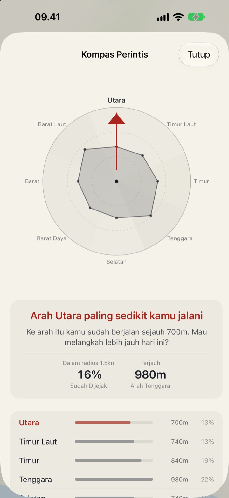
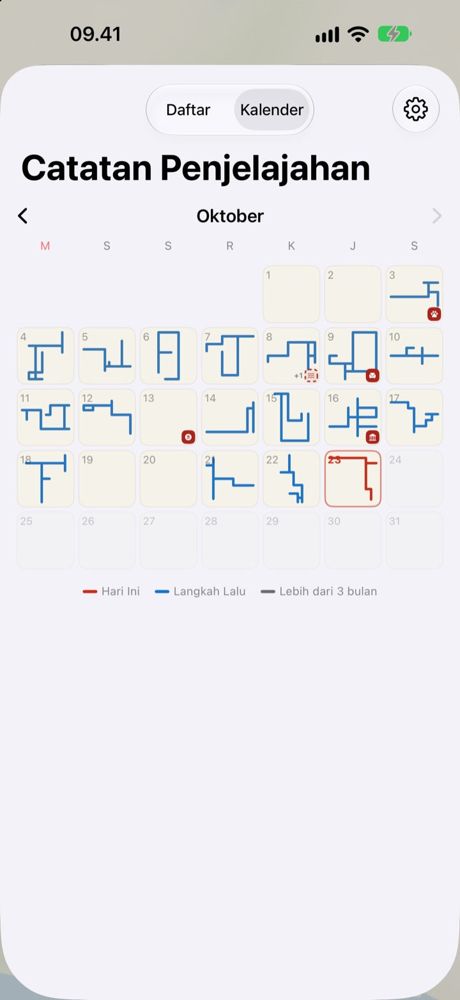

Peta yang terisi
hanya dengan berjalan
Awalnya hanya selembar kertas kosong. Hanya tempat yang kamu jalani yang terisi, satu titik demi satu titik, dan menyusuri jalan yang sama seratus kali tak akan memperluasnya. Ingin petamu bertambah luas? Ambil jalan baru.
Semua fitur gratis, tanpa iklan.

Coba berjalan
Seret jari atau mouse di atas kertas untuk berjalan. Titik biru adalah jalan yang pernah kamu lalui. Lihat bagaimana Jalan yang Ditarik Hari Ini berubah saat kamu mengulang jalan lama dibanding saat menuju arah baru.
Setiap hari lewat jalan yang sama?
Penghitung langkah menghitung langkahmu, tapi tak pernah peduli ke mana langkah itu pergi. Bolak-balik dari rumah ke stasiun saja sudah memenuhi lingkarannya, sementara gang di sebelah tetap jadi misteri bertahun-tahun. Buktu Buktu hanya menghitung jalan yang pertama kali kamu lalui, jadi hari ini ada alasan untuk memutar satu blok lebih jauh.
Stempel tempat yang dikunjungi dan ingin dikunjungi
Bubuhkan stempel di tempat kamu berdiri, atau tekan lama di mana saja di peta. Ada 212 stempel yang bisa dipilih, dikelompokkan per kategori.
Stempel di tempat yang belum pernah kamu jalani menjadi tempat yang ingin dikunjungi, lalu berubah jadi tempat yang dikunjungi saat kamu benar-benar sampai. Foto papan nama toko, latarnya dipotong dan papan itu berdiri sebagai stiker untuk tempat tersebut.

Jalan berikutnya: arah yang paling jarang kamu lalui
Kompas Perintis membagi sekelilingmu menjadi delapan arah dan menunjuk arah yang paling sedikit kamu jalani.
Jejak Kaki Hari Ini menjajarkan tempat yang kamu singgahi hari ini secara berurutan, lengkap dengan jarak yang kamu tempuh di antaranya.

Setiap hari meninggalkan bentuk
Kalender menggambar bentuk perjalanan kakimu setiap hari, bukan angka. Tulis catatan harian dengan teks dan foto, dan lihat seberapa banyak tiap perjalanan yang merupakan jalan baru.
Pilih periode untuk menonton petamu digambar sebagai video yang bisa diekspor.

Mulai dalam tiga langkah
- 1
Buka aplikasi
Selembar kertas kosong terbentang.
- 2
Izinkan lokasi
Pilih “Selalu Izinkan” dan nyalakan Gerakan & Kebugaran agar jalan kakimu tercatat tanpa membuka aplikasi.
- 3
Berangkat
Makin asing jalannya, makin luas petanya.
Cara membaca peta
- Titik merah
- tempat yang kamu jalani hari ini
- Titik nila
- langkah lalu, makin pekat di tempat yang sering dilalui
- Titik abu-abu
- tempat yang tidak kamu datangi lagi lebih dari tiga bulan. Warnanya memudar, tapi tak pernah hilang
- Stempel garis putus
- tempat yang ingin dikunjungi. Berubah jadi dikunjungi begitu kamu sampai
- Jalan yang Kugambar
- total panjang semua jalan yang pertama kali kamu lalui
- Jalan yang Ditarik Hari Ini
- seberapa banyak jalan hari ini yang baru
- Lihat Semua Sekaligus
- di Pengaturan, membuka Kompas Perintis, Jejak Kaki Hari Ini, dan film proses menggambar peta
Pilih antara peta tinta dan Peta Gambar.
Semua fitur gratis
Gratis
- Peta yang hanya terisi di tempat yang kamu jalani, dengan pelacakan jalan baru
- 212 stempel dan stiker papan nama toko
- Kompas Perintis dan Jejak Kaki Hari Ini
- Kalender dan catatan harian dengan teks dan foto
- Ekspor video proses petamu digambar
- Widget Layar Utama dan Layar Terkunci
- Sinkronisasi iCloud antarperangkat
Dukung pengembang
- Kirim tip kecil dari Pengaturan, kalau kamu mau
- Tip tidak membuka apa pun. Aplikasinya tetap sama
Tanpa iklan, tanpa langganan.
Pertanyaan
Aku sudah berjalan, tapi tidak ada yang muncul di peta.
Buka Pengaturan > Buktu Buktu > Lokasi, pilih Selalu, lalu nyalakan Gerakan & Kebugaran. Dengan begitu langkahmu tercatat meski aplikasi ditutup. Jika kamu memilih cara pencatatan hemat baterai di pengaturan aplikasi, buka aplikasi sebelum berangkat. Lokasi dengan akurasi rendah tetap disimpan, tapi tidak digambar.
Apakah perjalanan dengan mobil atau kereta dicatat?
Tidak. Aplikasi memakai data gerakan dan kecepatan untuk menggambar hanya jalan kaki dan lari, dan membuang ruas yang tampak seperti naik kendaraan. Sesekali bisa keliru.
Aku lewat rute yang sama setiap hari dan petanya tidak bertambah.
Memang begitu aturannya. Tempat dalam jarak 30 m dari yang sudah kamu lalui dihitung sebagai jalan yang sama, jadi hanya jalan yang pertama kali kamu lalui yang menambah Jalan yang Kugambar. Trotoar di seberang jalan juga dihitung sebagai jalan yang sama. Kompas Perintis menunjukkan arah yang paling jarang kamu lalui.
Apakah lokasiku dikirim ke mana-mana?
Tidak ke pengembang. Langkah, stempel, catatan harian, dan fotomu tersimpan di perangkat dan di iCloud pribadimu, dan pengembang tidak bisa melihatnya. Statistik penggunaan anonim tidak pernah menyertakan koordinat, teks catatan harian, nama tempat, atau foto. Layanan Peta Apple dipakai untuk mengubah koordinat menjadi nama tempat. Rinciannya ada di Kebijakan Privasi di bawah.
Apakah catatanku ikut pindah ke perangkat baru?
Ya. Masuk dengan Akun Apple yang sama di perangkat baru dan biarkan iCloud tetap aktif, maka langkah, stempel, catatan harian, dan fotomu ikut pindah.
Bagaimana cara menghapus stempel atau foto?
Hapus stempel dari daftar Tempat yang Kucap, dan sentuh lama foto di catatan harian untuk menghapusnya. Cara menghapus semua jalan dan catatan harian sekaligus sudah masuk rencana pengembangan.
Bagaimana cara menambahkan widget?
Sentuh lama Layar Utama, ketuk Edit > Tambah Widget, lalu pilih Buktu Buktu. Untuk Layar Terkunci, sentuh lama layarnya, lalu ketuk Sesuaikan. Widget Layar Utama menampilkan bentuk dan panjang jalan hari ini, sedangkan Layar Terkunci menampilkan jarak hari ini.
Apa yang kubutuhkan?
iPhone dengan iOS 17.0 atau lebih baru.
Bagaimana cara menghubungi kalian?
Kirim masukan dari pengaturan aplikasi atau email ke alamat di bawah. Kami akan membalas secepatnya.
Ada pertanyaan atau masukan? Tulis ke leeo@kakao.com.